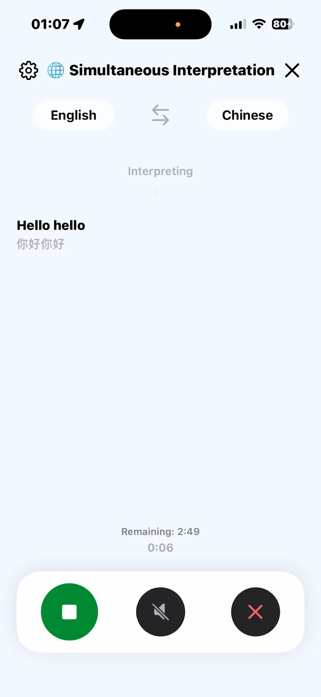
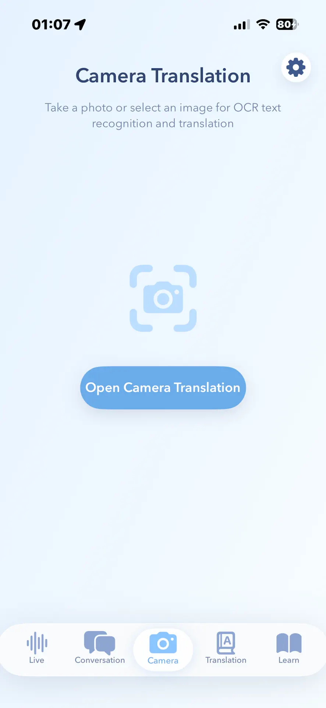

iPhone travel translation how-to
How to translate menus on iPhone, then handle conversations.
For a printed menu, open Apple Translate and tap Camera. For a saved photo, use Camera, then Photo Library. Start with these built-in tools before choosing an optional travel app.
The app previews show optional Translation Specialist. Its camera image is an entry screen, not a translated menu or an Apple Translate screenshot.


Step by step
How to translate menus, signs, and conversations while traveling.
Match the mode to the moment, then test the exact language pair before relying on it away from a network.
Select the source and target languages for the destination. Translate one short phrase before leaving reliable Wi-Fi so you know the pair is configured correctly.
For directions, hotel check-in, or a quick question, tap to talk and let the other person answer in the selected language pair.
Let the app read the translated reply aloud when passing the phone or showing text would interrupt the exchange.
For a restaurant menu, start with the iPhone Translate camera flow or open camera translation in your travel app. Take a clear photo or choose an image, then review the recognized and translated text. Keep the text level, well lit, and close enough to read.
Switch to continuous interpretation for a tour, meeting, or longer exchange where repeated tap-to-talk turns are inconvenient.
The App Store listing limits offline support to core language pairs. Test the exact pair and mode you expect to use without a network connection before the trip.
Travel situations
Different translation modes solve different moments.
Travelers often switch between spoken conversation and text-heavy environments. A useful translator should keep those workflows close instead of forcing everything through typing.
Use speech when asking for directions, checking into a hotel, or handling short conversations.
Play the translated sentence when showing text on screen would slow the conversation.
Scan menus, signs, and labels, or choose an existing image when the written text is the problem.
Use continuous interpretation for longer conversations such as tours and meetings.
Do not assume every pair or mode works offline. Test your exact destination languages before departure.
Current App Store facts
Know what is included before installing.
The current US App Store listing provides the clearest boundary for supported features, price, requirements, and privacy.
Translation Specialist is free to download and includes optional in-app purchases.
The current listing says it is designed for iPhone and requires iOS 17.4 or later.
The App Store describes two-way voice, camera translation, continuous interpretation, typed text, and offline support for core language pairs.
Apple's privacy label says the developer does not collect data from this app. Review the latest label before downloading because disclosures can change.
Travel FAQ
Common travel translation questions.
Can I translate a restaurant menu on iPhone without installing another app?
Yes. Start with Apple's Translate app camera mode or Live Text in Camera or Photos when the language is supported. Use a dedicated travel translator when you also need two-way voice, audio playback, live interpretation, or offline trip testing.
When should I use camera translation instead of voice?
Use camera OCR when the source is written text: menus, signs, labels, receipts, and short documents.
When is voice translation better?
Use voice input for live conversation, quick questions, and situations where typing would interrupt the exchange.
Which portfolio app is built for this?
Translation Specialist is the travel-focused iPhone app for two-way voice, translated playback, camera OCR, live interpretation, text translation, and offline support for core language pairs.
Can camera translation read a whole page reliably?
Camera OCR works best with clear, well-lit, short text. For dense documents or critical instructions, scan smaller sections and verify names, numbers, dates, and safety details.
Should medical, legal, or immigration translations be checked by a person?
Yes. Use machine translation for everyday travel assistance, but confirm critical medical, legal, safety, or immigration information with a qualified human interpreter.